Electrical Tips and Precautions
Before TroubleshootingCheck applicable fuses in the appropriate fuse/relay box.
Check the battery for damage, state of charge, and clean and tight connections.
Check the alternator belt tension.
CAUTION:
Do not quick-charge a battery unless the battery ground cable has been disconnected, otherwise you will damage the alternator diodes.
Do not attempt to crank the engine with the battery ground cable loosely connected or you will severely damage the wiring.
The original radio has a coded theft protection circuit. Be sure to get the customer's code number before
- disconnecting the battery.
- removing the No. 32 (7.5 A) fuse from the under-hood fuse/relay box.
- removing the radio.
After service, reconnect power to the radio and turn it on. When the word "CODE" is displayed, enter the customer's 5-digit code to restore radio operation.
Handling Connectors
Make sure the connectors are clean and have no loose wire terminals.
Make sure multiple cavity connectors are packed with grease (except watertight connectors).
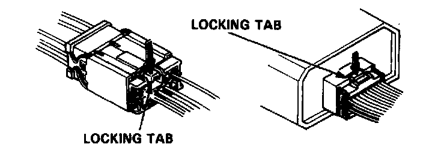
All connectors have push-down release type locks.
Some connectors have a clip on their side used to attach them to a mount bracket on the body or on another component. This clip has a pull type lock.
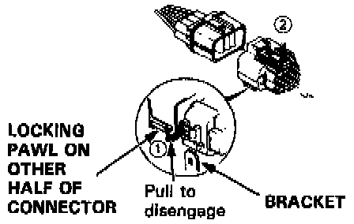
Some mounted connectors cannot be disconnected unless you first release the lock and remove the connector from its bracket.
Never try to disconnect connectors by pulling on their wires; pull on the connector halves instead.
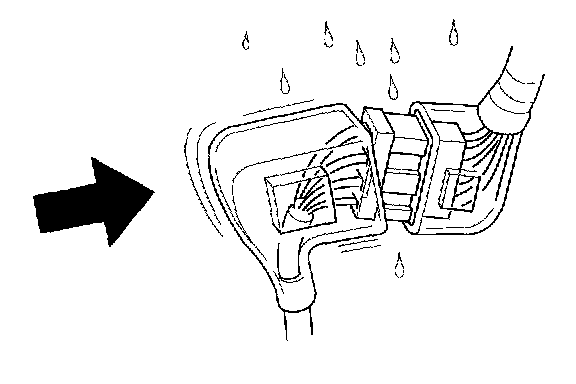
Always reinstall plastic covers.
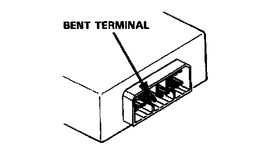
Before connecting connectors, make sure the terminals are in place and not bent.
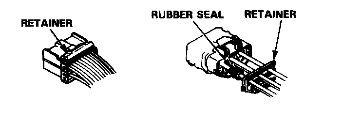
Check for loose retainer and rubber seals.
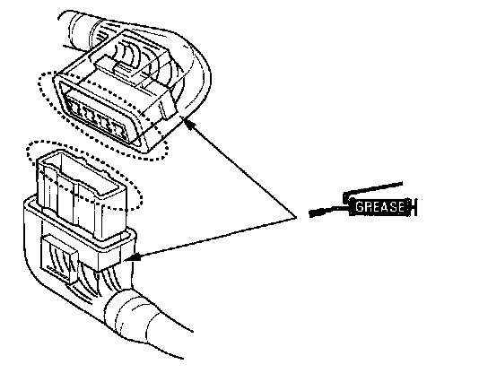
The backs of some connectors are packed with grease. Add grease if needed. If the grease is contaminated, replace it.
Insert the connector all the way and make sure it is securely locked.
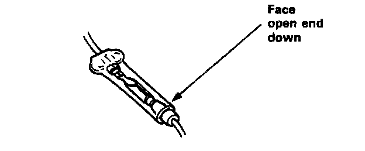
Position wires so that the open end of the cover faces down.
Handling Wires and Harnesses
Secure wires and wire harnesses to the frame with their respective wire ties at the designated locations.
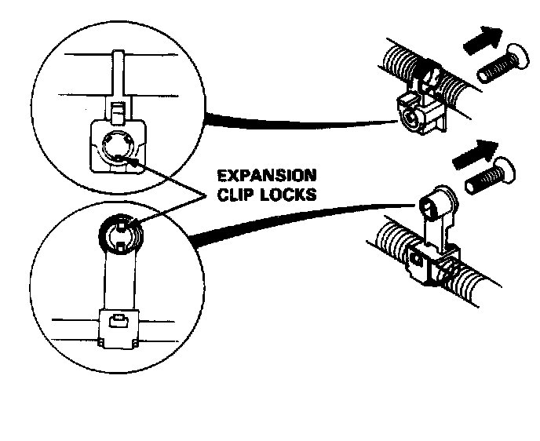
Remove clips carefully; don't damage their locks.
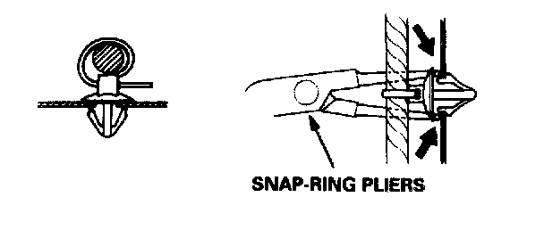
Slip pliers under the clip base and through the hole at an angle, then squeeze the expansion tabs to release the clip.
After installing harness clips, make sure the harness doesn't interfere with any moving parts.
Keep wire harnesses away from exhaust pipes and other hot parts, from sharp edges of brackets and holes, and from exposed screws and bolts.
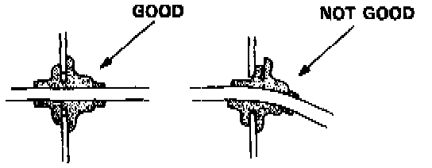
Seat grommets in their grooves properly.
Testing and Repairs
Do not use wires or harnesses with broken insulation. Replace them or repair them by wrapping the break with electrical tape.
After installing parts, make sure that no wires are pinched under them.
When using electrical test equipment, follow the manufacturer's instructions and those described in the service steps.
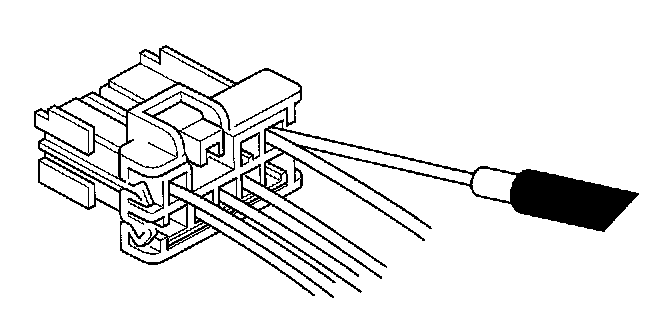
If possible, insert the probe of the tester from the wire side (except waterproof connector).
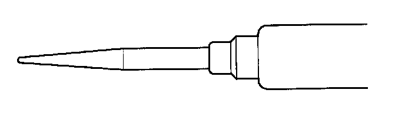
Use a probe with a tapered tip.
Refer to the instructions in the Acura Terminal Kit for identification and replacement of connector terminals.